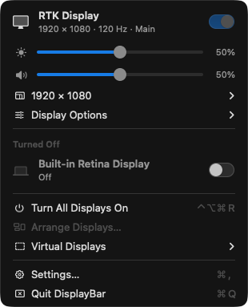
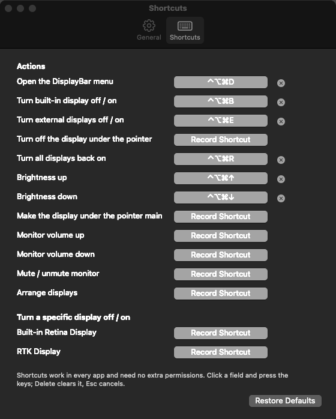
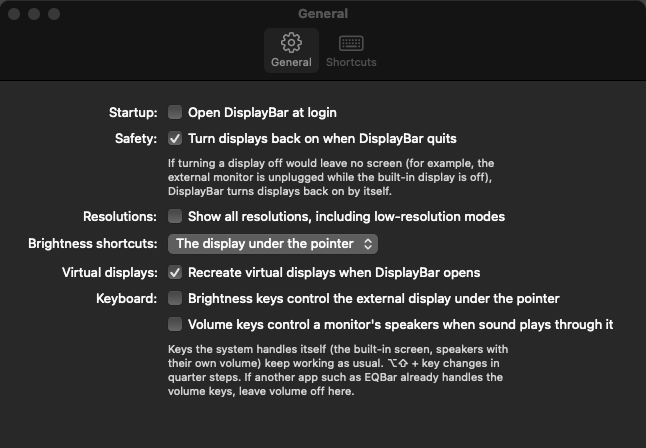

Every display, one switch away in your menu bar.
DisplayBar is a native Mac app that can turn any screen off, including the built-in one with the lid open. It controls brightness and volume on external monitors over DDC, and handles resolutions, arrangement, virtual displays and global shortcuts. The whole app is 1.7 MB and uses under 9 MB of memory while idle.
Made by ZephyrSai. Inspired by BetterDisplay.

Switch a screen off. Your desk keeps working.
Turning a display off disconnects it, the way unplugging would, but without touching a cable. Its windows move to the screens that stay on, and the panel goes dark. Try it below: flip the switches, unplug the monitor, or use the real shortcuts on this page.
Tip: press ⌃⌥⌘B to turn the built-in screen off and on.
A working replica of the menu. The real one is in the hero screenshot.
Built-in screen off, lid open
Use your laptop keyboard and trackpad with only the big monitor on. No clamshell, no closed lid getting hot.
Never stranded
The last screen can't be turned off. If you unplug the monitor while the built-in screen is off, it comes back on by itself.
Or just sleep the monitor
With DDC you can also put a monitor into standby and keep it connected, so your windows stay put.
Drag screens into place, right from the menu bar
Arrange Displays works like the canvas in System Settings. Drag a screen and it snaps edge to edge, with nearby edges and centers lining up. Drag the white menu bar to another screen to make that one the main display. The demo below uses the app's own snapping rules.
Brightness and sound for monitors macOS can't reach
macOS can't change an ordinary monitor's brightness or volume. DisplayBar talks to the monitor directly over DDC/CI, the same channel its own buttons use. Each monitor gets brightness and volume sliders. Click the speaker to mute, which works even on monitors without a mute command.
What DisplayBar can set over DDC
The app checks what each monitor answers to and shows only those controls.
Monitors that don't answer DDC (some docks, TVs, DisplayLink adapters) dim in software instead. Apple displays and the built-in screen use the system's own brightness control.
Your keyboard keys, for the monitor
This is optional and off by default. Turn it on in Settings and allow Accessibility.
Shortcuts that work in every app
They're registered system-wide, so they need no Accessibility or Input Monitoring permission. Change any of them in Settings, and give each display its own on/off shortcut. Try pressing them here: the matching row lights up.

Settings › Shortcuts. Click a field and press the keys. If another app already owns a combination, it's flagged.
The rest of the Displays panel, closer to hand
Resolutions and HiDPI
Retina-class screens list their sharp "looks like" sizes. Ordinary monitors list plain resolutions, and every mode is one click away.
Refresh rate
Pick from every rate the panel offers for the current resolution, from 24 Hz to 120 Hz.
Rotation
Choose standard, 90°, 180° or 270° for portrait monitors.
HDR and presets
Turn HDR on or off for HDR monitors. Switch the XDR panel's reference presets, such as P3-1600 nits, HDR Video, sRGB and Photography.
Virtual displays
Create dummy screens up to 4K, sharp HiDPI ones included, for screen sharing and headless setups. You can also mirror a monitor to a sharper HiDPI version of itself.
Mirroring, main display, names
Mirror any screen onto another, move the menu bar, and rename monitors that report a blank name.

Settings › General.
Works with any number of displays
Every screen gets its own section, switch, sliders and shortcut, and the arrangement canvas scales to fit them all. The built-in test runs real displays alongside four virtual ones at once.
System frameworks only, nothing installed
DisplayBar is one small Swift and AppKit program. It has no kernel extension, no helper and no third-party code. It uses the same frameworks System Settings does. Private interfaces are looked up when the app starts, so if a future macOS drops one, only that feature turns off.
Turning displays off
CGSConfigureDisplayEnabled (SkyLight), inside a display-configuration transaction that lasts for the login session. macOS stops listing a disabled screen, so DisplayBar keeps its own record to bring it back.
DDC/CI on Apple silicon
IOAVService I²C writes to the monitor at address 0x37. CoreDisplay's IODisplayLocation pairs each screen with its own port, so the right monitor always gets the command.
Modes, arrangement, mirroring
Public CGDisplayConfiguration APIs, saved permanently like System Settings does. Rotation, HDR and presets come from the private MonitorPanel framework, the engine behind System Settings › Displays.
Virtual displays and shortcuts
CGVirtualDisplay creates the dummy screens. Shortcuts use Carbon's RegisterEventHotKey, which needs no permission. The optional brightness and volume keys use an event tap and Accessibility.
Safety rules, tested on every build
kill. You can switch this off. Logging out or restarting always restores every display.Run DisplayBar --selftest to check all of this. Its 62 checks turn displays off and on, rearrange them and test the automatic recovery, using temporary virtual displays only.
Small enough to forget it's running
Measured on an Apple M4 Pro with macOS 26. Memory is the footprint Activity Monitor shows. Idle means no timers and no polling: the app wakes only when something changes.
Memory by scenario
From the app's built-in tour, which opens and closes each part in turn.
What's left out
Everything DisplayBar doesn't carry is memory and CPU you keep.
Up and running in a minute
DisplayBar needs macOS 14 or later on an Apple silicon Mac. It doesn't need a permission unless you turn on the keyboard keys.
Download
Get DisplayBar.zip from the latest release, unzip it and drag DisplayBar to Applications.
Open it the first time
The app isn't notarized, so macOS asks first. Right-click DisplayBar and choose Open, or allow it in System Settings › Privacy & Security.
Find it in the menu bar
Click the display icon, or press ⌃⌥⌘D. Turn on Open DisplayBar at login in Settings if you'd like it to start with your Mac.
Prefer Terminal?
# after moving it to /Applications
xattr -dr com.apple.quarantine /Applications/DisplayBar.app
open /Applications/DisplayBar.appBuild it yourself
git clone https://github.com/ZephyrSai/DisplayBar
cd DisplayBar
scripts/build-app.sh # → build/DisplayBar.app
.build/release/DisplayBar --selftestBuilt on great work by others
BetterDisplay
By waydabber, the app that showed what display control on a Mac can be. DisplayBar is inspired by it and shares none of its code.
MonitorControl and m1ddc
Their open research made DDC on Apple silicon possible, including the IOAVService packet format DisplayBar uses.
Chromium
Its test harness documented the CGVirtualDisplay interfaces used for virtual displays.